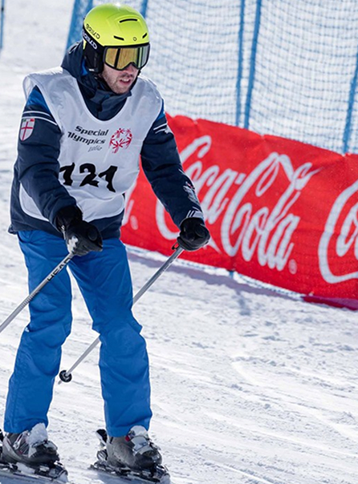

Valori universali...
Coca-Cola non si limita a fornire finanziamenti o prodotti, ma ha integrato la missione di Special Olympics all'interno della propria cultura aziendale. Questo si manifesta attraverso programmi di volontariato massiccio, dove i dipendenti dell'azienda partecipano attivamente all'organizzazione dei Giochi, assistendo gli atleti e le loro famiglie.
Questa partecipazione diretta ha creato un ponte emotivo unico, trasformando la sponsorizzazione in un progetto di comunità. Il sostegno dell'azienda è stato fondamentale anche per dare voce agli atleti attraverso campagne di comunicazione che non puntano sulla pietà, ma sulla celebrazione del talento, della determinazione e del coraggio, contribuendo in modo decisivo a cambiare la percezione pubblica della disabilità.
